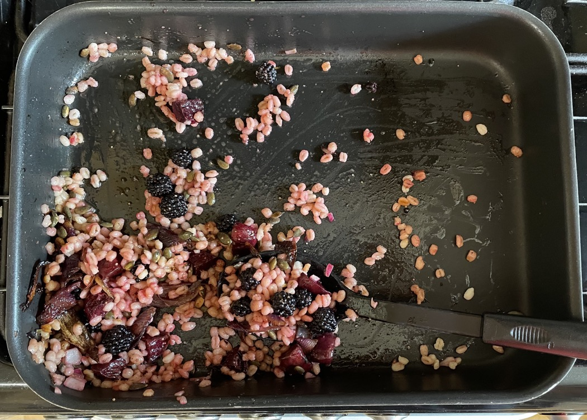

Beetroot, barley & blackberry salad
Roast veg
- Mix and then roast at 180°C for 35-45 mins
- 400-500g beetroots cut into quarters or eighths
- 1¾ red onions cut into wedges
- 2 tbsp olive oil
- 2 sprigs rosemary
- 1½ tbsp balsamic vinegar
- ¼ tsp salt
- cracked black pepper
Dressing
- Mix and leave for 20 mins
- 100g blackberries
- ¼ red onion diced
- 2 tbsp cider or sherry vinegar
- 1 tsp dijon mustard
- 1 tsp honey
- Pour off liquid and mix with
Salad
- Combine
- 130g pearl barley cooked
(weight before cooking)
- 50g pumpkin seeds toasted
- 50g watercress / rocket
- small handful mint leaves
- veg and juices
- dressing
Serving
- venision / duck fillets
- goat's cheese / feta
Notes
- Made: 6 Sep 2022
- could try roasting veg in air fryer
- leaves add green
- Original recipe
Pics
